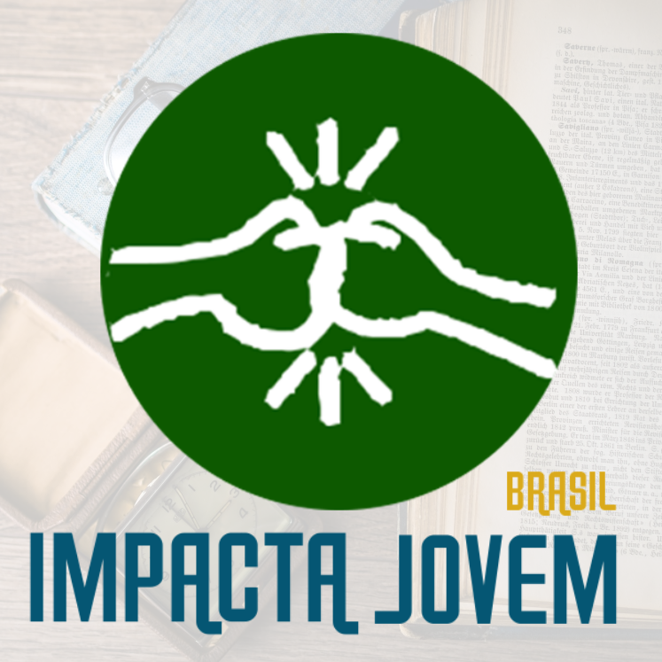

Volunteer
Volunteering has been an active part of my life for quite some time now. For me, being a volunteer is a opportunity to be a part of your community, to not just live and pass by your city, but work for the change with your capacities and be actively a true citizen.
I was first introduced to volunteering in 2015, as some of my teachers created a competition between our 9th grade classrooms, in which students should give school materials that would be donated for children in need. At first glance, the competition was suposed to be more like you bring what you want, but quickly me and other two friends got together and started heading our class.
Rather than asking for students to bring materials as they please, we made a reunion and soon presented a plan to our class: we'd collect money of every student in class, and we'd buy all the materials in a dollar store, thus getting more materials and with more diverse range of things - such as erasers, pencils paper, etc-.
The initiative was an absolute success, we got ~200R$ from our classmates and teachers. Together we won the competition and even got invited to delivery all school's donations with the school principal for our initiative and outstading leadership as our class was the most successfull in the whole school.
Seeing how much I was able to help with such small actions and how rewarding this experience was made me fall in love with volunteering and leadership practices. Later, this would give me the opportunity to be Infantry Guild vice-president - as I studied in a military school, we had some different routines and initiatives -, and me to be apointed to join the Honor Legion - a group of the best students across the school.
 The Infantry Guild was the biggest guild of the school, with approximately half of all guilds students - some 200 ish students -, and we developed some activities to show the
day-to-day routine of a militar in the Infantry, with highlight to the day we actualy got to go to a real army training camp.
The Infantry Guild was the biggest guild of the school, with approximately half of all guilds students - some 200 ish students -, and we developed some activities to show the
day-to-day routine of a militar in the Infantry, with highlight to the day we actualy got to go to a real army training camp.
The Honor Legion was more dedicated just to put the best students in the spotlight. But when I joined, I got together with a friend who had more experience in the group and we managed to rebuild the Legion from the ground up. We created a Constitution, weekly meetings and focused in volunteering and creating a better environment for all the school's students. It was a roller coaster of a ride but we made it works and I was really happy with the work I had done for the Legion.
Outside my school, in 2018, I joined Rotary's Interact initiative - which is groups of adolescents ranging from 12 to 18 years who do volunteering work while developing their leadership and oratory skills - and applied to a Social Actions Mentorship at ImpactaJovem Brasil, which by the time was an upcoming volunteer network focused in developing and empowering the youth.
I joined Interact Club de Curitiba Leste in early 2018 and it was a perfect fit. I love Rotary's principles of companionship, volunteering and self-development. While I was in Interact, I was invited to a District 4730 position as Membership Manager - district is a Rotary's division of clubs of an area, in this case, 4730 ranges mostly the east of the Parana state -, served as my club's Treasude Holder (2018-2019) and was awarded with outstanding member award the two Rotary Years I was a member (2017-2018 and 2018-2019).
In July 2019, as the new Rotary Year begun, I joined Rotaract Club de Curitiba Leste, which is a continuation of the Rotary program for young adults ranging from 18 to 30. As a Rotaractor, I'm now with the position of Membership Manager (2020-2021), as I love dealing with people and think that engaging members is key to a club success, more than ever in this Covid quarantine.
 ImpactaJovem was a small initiative the first time I heard about it, but I thought it was a good experience to have as it had a mentorship to develop people wanting to do volunteer work. By the time I finished the mentorship in late 2018, I had some spotlight as one of the best delegates of the cycle. For this reason, I was invited to become a Coordinator of Social Actions in the program for 2019. It was an honor and a great opportunity to not only help the organization that helped me but to share my volunteer experience, as I applied to be a mentor in the same year. Now in the 2020 cycle, unfortunately we can't have our traditional mentorship, as volunteering without physical contact would be a hard task to delegates that aren't used to develop social actions. For this reason, we as Social Actions coordinators are reinventing ourselves and searching were when can fit in the other ImpactaJovem's fronts. I, as someone passionate about people, am realocating myself to the Internal Engagement front, were we develop strategies to help improve the quality of the experience of our coordinators across ImpactaJovem.